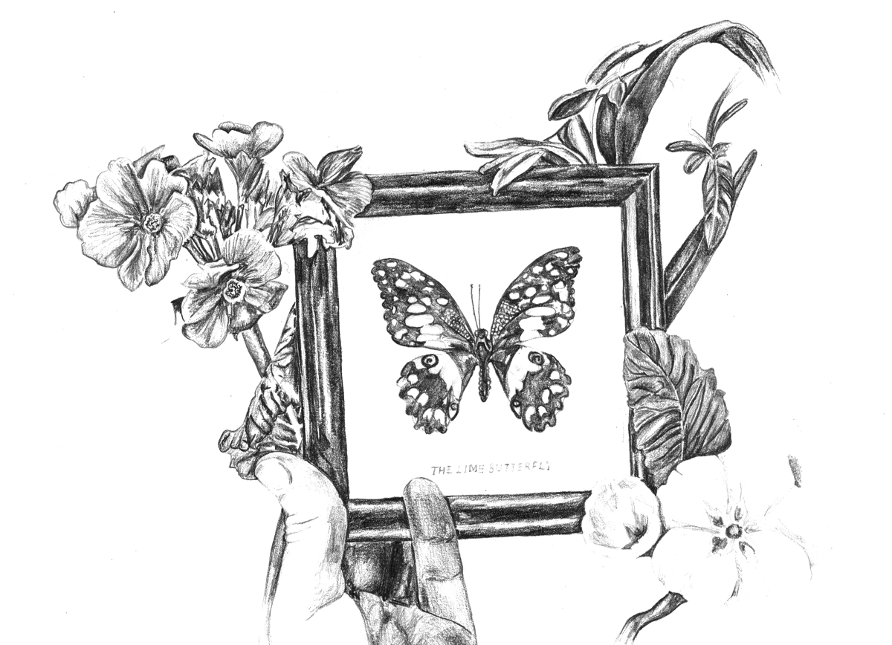
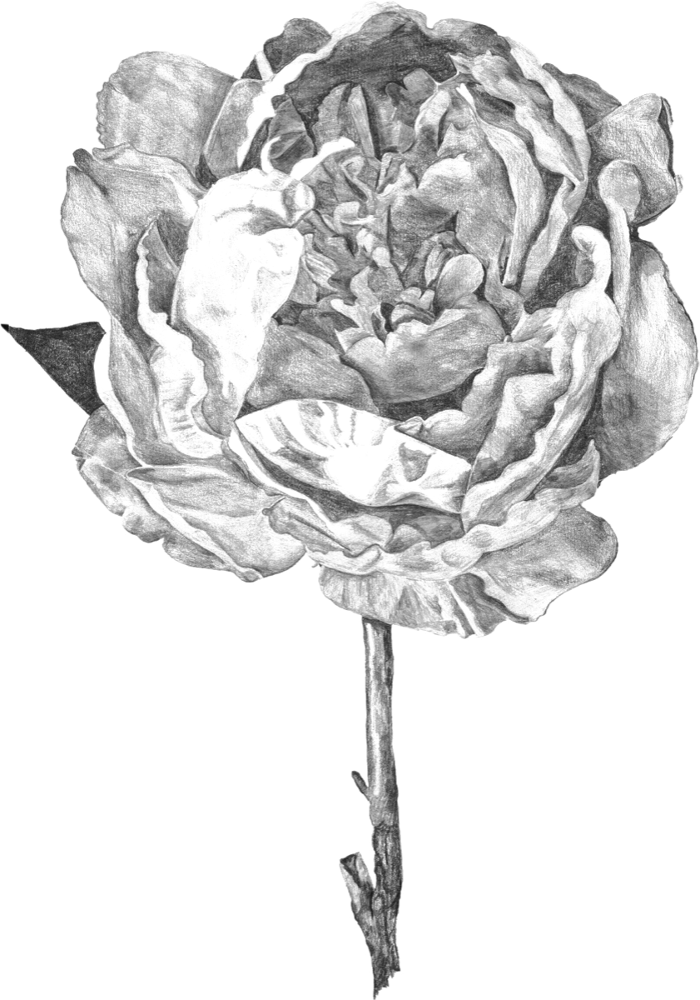
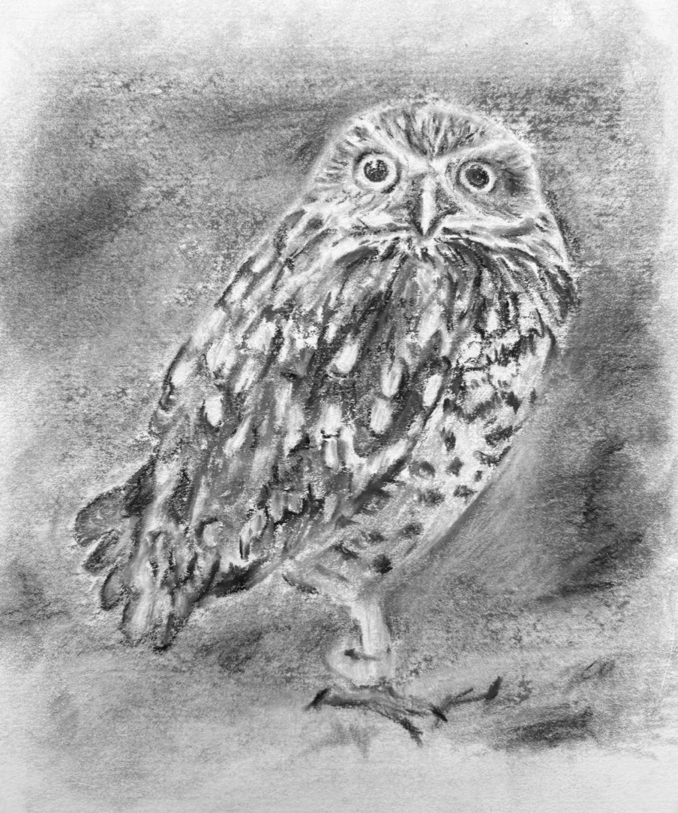
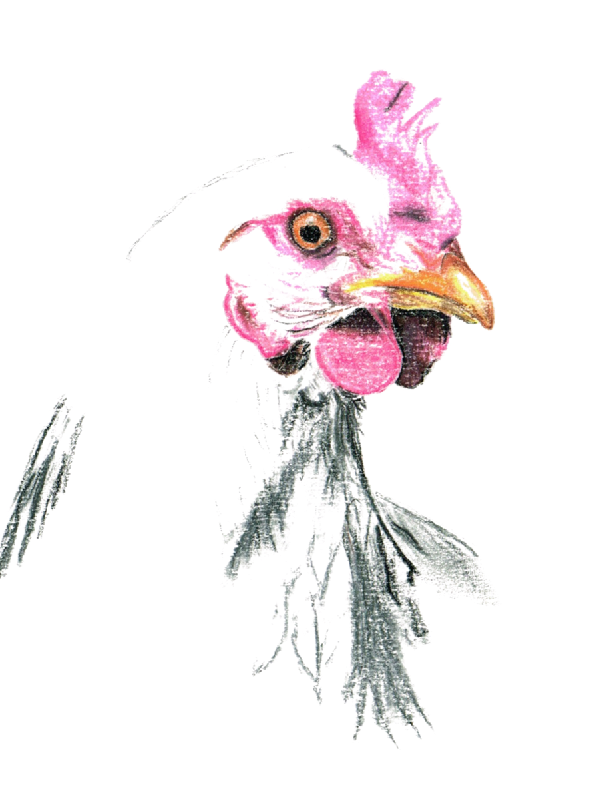
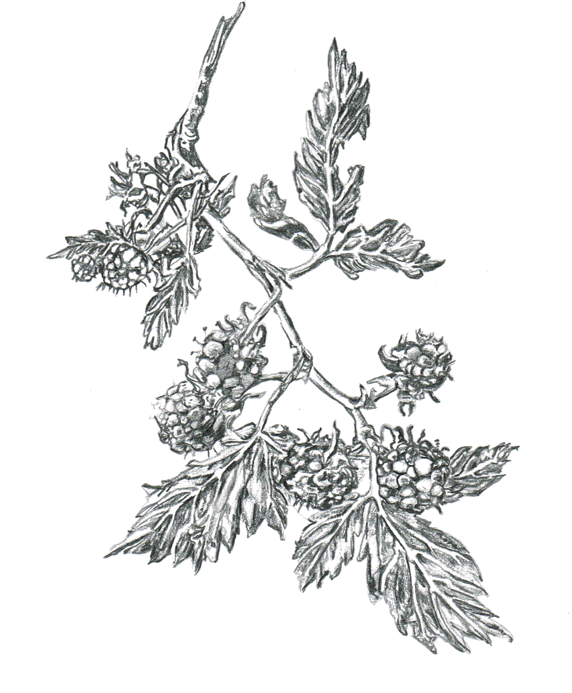
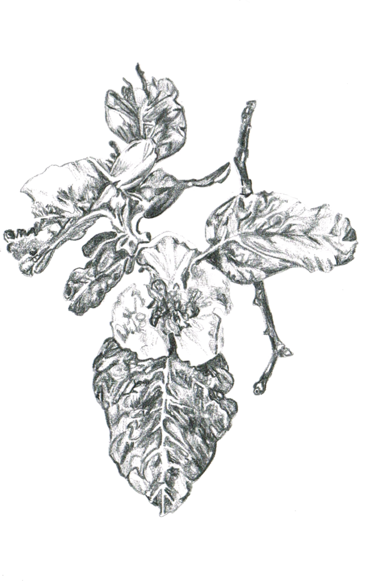

Words by Rosie Roche — poet, observer, dreamer.
Rosie loved to draw and write. She was never happier than with a pad and a pencil.





There is something so deeply dazzling about the circus as to leave you with a lingering feeling of amazement and inspiration which is unparalleled by any other kind of performance.
Such a confusion and kaleidoscope of wonders and colour and impossibility.
It was utterly breathtaking and I loved every moment.
To be an utterly invisible gasping laughing silent in awe part of a crowd all held in the artful balance of suspense and delight.
The theatricality of it all was amazing.

What would Byron and Wordsworth write if they knew we would one day commute through the intangible mountains of white cloud, in a branded cylinder hurtling through the air, somehow more stable and smooth than rolling on rails in a train.
Sinking into the glow.
So vivid so glorious so heavenly.
It would give way to shadow and rain and muddy green and grey.
England. Home.